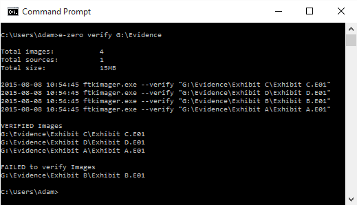
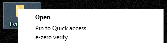

e-zero is a tool designed to save you time when dealing with large numbers of forensic images. It automates the use of FTK Imager CLI from AccessData to move around images and verify them.
It's designed to run in parallel as much as possible, but it'll only read or write one file at a time from a disk which should meann you get the fastest possible disk-to-disk transfer speed.

Usage
Currently e-zero is a command line only tool, the following examples show how to use it. If there is interest in a GUI let me know and I'll see what I can do.
You: Adam I don't care about how to use it, just tell me how to install the bloody thing. Me: Just click here and jump to the installing section
e-zero uses docopt to bring you a simple command line. Just use --help if you need to know the commands you can use.
Let's pretend you have 3 SANs and you store terrabytes of data on them. You had a power cut and are worried that some of the images may have been corrupted, with one command from e-zero you can verify them all.
There is no limit to the number of images or sources you can ask e-zero to verify, the more you have the longer it'll take. It'll run as fast as your machine will go.
Also, e-zero will add a context menu when you right click on a directory. This allows you to right click on a directory and verify all the images within:

Consolidating Images
So this time you were on a dawn raid, imaged 10 computers, and used 6 hard disks in the process. Your standard operating procedure is to copy everything to one disk and keep a backup on the NAS. Sounds like hassle, or maybe you just palm it off to the new guy?
With e-zero you can give it all of your sources and leave it to take care of the mess for you. Every image is copied to a folder based on the image basename keeping it nice and tidy too.
The example below takes all of the e01 images on drive letters E, F. G, H, I, and J and makes two verified copies of the images. One copy goes to the T drive and the other is stored on the NAS.
Further down the line and you need to save some space. You've got all your images on your scratch disks and want to copy them off to something smaller for storage. You can use e-zero to reacquire the images with any compression level you like (P.S. if you're reading this you want 9, maximum compression).
All the images are reacquired with the new compression level and verified, and as it's FTK Imager CLI that does the heavy lifting you'll get a log file you're used to.
e-zero is pretty simple to install, but without FTK Imager CLI it won't do anything useful. I didn't make FTK Imager CLI so I can't just go about giving it out, you have to do that bit on your own. Once you've got it downloaded you need to update your system path variable so that e-zero can use it too.
So basically:
1) Download and install e-zero (make sure to tick the option to update PATH)
2) Download the FTK Imager CLI from AccessData http://www.accessdata.com/support/product-downloads
3) Make FTK Imager CLI available in PATH. If you're unsure on how to do this please follow this guide
If you're still having issues getting it going send me an e-mail and I can see if I can help.
Bugs
If you find a bug in e-zero, let me know! That way I can fix it. If you have a GitHub account you can raise an issue, but if you don't you can just send me an email and I'll see what I can do - adam [at] nucode.co.uk
License
This software is free as in beer and free as in freedom and uses the MIT License. Enjoy.
The MIT License (MIT)
Copyright (c) 2014 Adam Swann (4144414D)
Permission is hereby granted, free of charge, to any person obtaining a copy
of this software and associated documentation files (the "Software"), to deal
in the Software without restriction, including without limitation the rights
to use, copy, modify, merge, publish, distribute, sublicense, and/or sell
copies of the Software, and to permit persons to whom the Software is
furnished to do so, subject to the following conditions:
The above copyright notice and this permission notice shall be included in all
copies or substantial portions of the Software.
THE SOFTWARE IS PROVIDED "AS IS", WITHOUT WARRANTY OF ANY KIND, EXPRESS OR
IMPLIED, INCLUDING BUT NOT LIMITED TO THE WARRANTIES OF MERCHANTABILITY,
FITNESS FOR A PARTICULAR PURPOSE AND NONINFRINGEMENT. IN NO EVENT SHALL THE
AUTHORS OR COPYRIGHT HOLDERS BE LIABLE FOR ANY CLAIM, DAMAGES OR OTHER
LIABILITY, WHETHER IN AN ACTION OF CONTRACT, TORT OR OTHERWISE, ARISING FROM,
OUT OF OR IN CONNECTION WITH THE SOFTWARE OR THE USE OR OTHER DEALINGS IN THE
SOFTWARE.